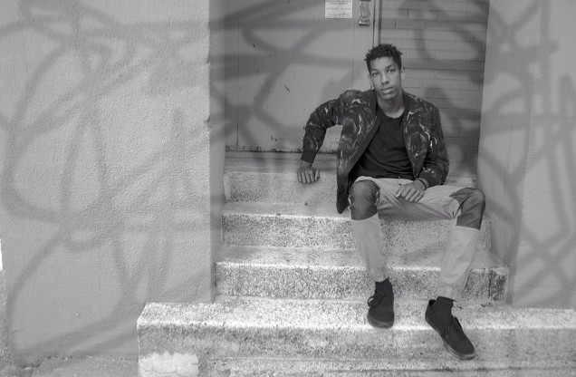

nliten
nliten
nliten biography
Who is NliteN?
Jordan Miles Tolbert (October 31, 1994-Present) otherwise known as NliteN, was born in Boston, Massachusetts. He is the second youngest of six children. NliteN's father wasn't in his life from an early age which is a topic that surfaces frequently is NliteN's lyrics. Nevertheless, NliteN undeniably takes after him in his musical pursuits. NliteN's rapid development in the arts is inevitably due to the background of his parents whom, between them, own a proficiency in visual arts, music production, engineering, performance, etc... In a way, it's as if NliteN is destined for higher achievements.
Despite a late start, NliteN picked up the basics of rap seamlessly. Starting rapping his sophomore year in high school, he was influenced by rappers ranging from all eras. Notable artists: Mos Def, Joey Badass, Kendrick Lamar, and J. Cole especially, played a role in the delivery of his rhymes. Beginning with freestyle rhyme, NliteN soon realized that he had more complex concepts that he needed to illustrate. Simple concepts soon blossomed into elaborate and intricate documentation of past and present subjects and future hopes. Soon friends, family members, and even complete strangers began to affirm his belief in his skills.
In his music, NliteN takes on the role of an urban commentator, making strong statements on issues both external and internal. As a young black male in inner-city Boston, he was exposed to violence, racism, drugs and alcohol, and just about everything imaginable under that lens. With his lyrics, he speaks his truth from experience and nothing more. Some of his more potent messages are woven into the tracks Public Enemy, Guernimerica, and GoodGrief while taking on a more introspective route in songs such as Rehab and I/O.
Every day NliteN continues to grow and network, building relationships that both further the progression of his career and, equally as significant, his person. His most notable move as of recent is joining the Food4Art™ creative group founded by fellow artist, Mikel Mitchel, which focuses on developing individual artistry through collaboration. As a member of this organization, NliteN is in progress of dropping both a collaboration EP , as well as a solo EP during the fall season.
As is life, everyday is a journey. NliteN is never the same person when he wakes up the next morning. That is, if he gets any sleep the night before. Working diligently to master his craft and reach the lofty goals he continues to set for himself, NliteN will, without a doubt, be a household name before long. So get fired up y'all! You are now witnessing the journey of a young, spirited intellectual. The sky's not the limit. There is no limit. NliteN.
nliten music